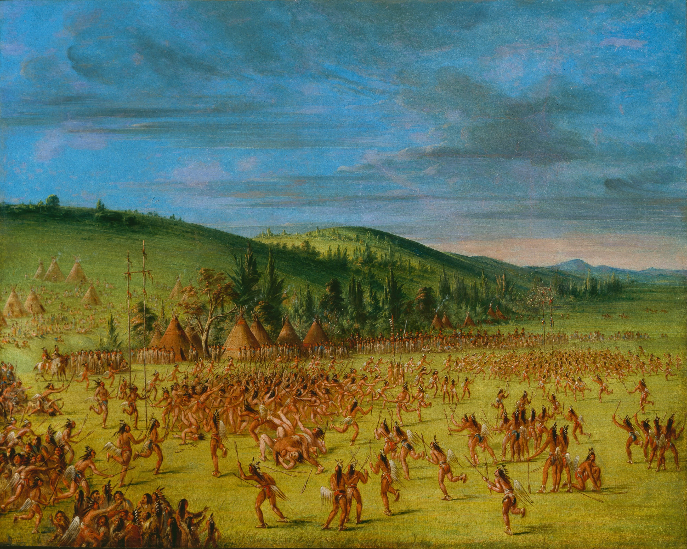
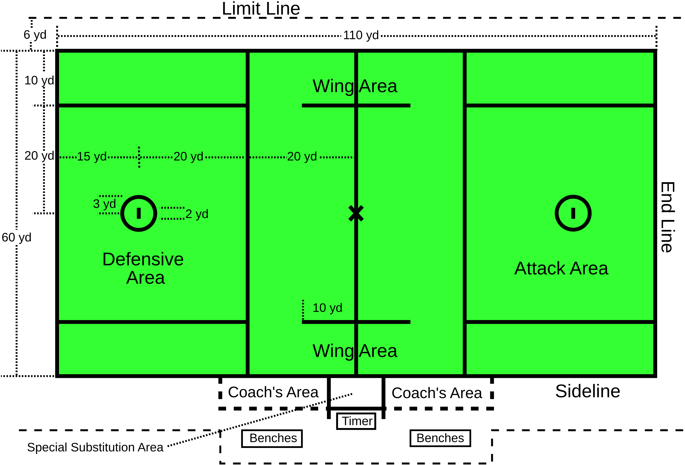

Lacrosse is based on games played by various Native American communities as early as 1100 AD. By the 17th century, a version of lacrosse was well-established and was documented by Jesuit missionary priests in the territory of present-day Canada. In the traditional aboriginal Canadian version, each team consisted of about 100 to 1,000 men on a field several miles/kilometers long. These games lasted from sunup to sundown for two to three days straight and were played as part of ceremonial ritual, a kind of symbolic warfare, or to give thanks to the Creator or Master. Lacrosse played a significant role in the community and religious life of tribes across the continent for many years. Early lacrosse was characterized by deep spiritual involvement, befitting the spirit of combat in which it was undertaken. Those who took part did so in the role of warriors, with the goal of bringing glory and honour to themselves and their tribes. The game was said to be played "for the Creator" or was referred to as "The Creator's Game", and a version of the game was called "baggataway".
Field lacrosse is the men's outdoor version of the sport. There are ten players on each team: three attackmen, three midfielders, three defensemen, and one goalie. Each player carries a lacrosse stick. A short stick measures between 40 and 42 inches (100 and 110 cm) long and is used by attackmen and midfielders. A maximum of four players on the field per team may carry a long stick which is between 52 and 72 inches (130 and 180 cm) long and is used by the three defensemen and sometimes one defensive midfielder. The goalie uses a stick with a head as wide as 12 inches (30 cm) that can be between 40 and 72 inches (100 and 180 cm) long.
Box lacrosse is played by teams of five runners plus a goalie on an ice hockey rink where the ice has been removed or covered by artificial turf, or in an indoor soccer field. The enclosed playing area is called a box, in contrast to the open playing field of the traditional game. This version of the game was introduced in Canada in the 1930s to promote business for hockey arenas outside of the ice hockey season. Within several years it had nearly supplanted field lacrosse in Canada.
The rules of women's lacrosse differ significantly from men's lacrosse, most notably by equipment and the degree of allowable physical contact. Women's lacrosse rules also differ significantly between the US and all other countries, who play by the Federation of International Lacrosse (FIL) rules. Women's lacrosse does not allow physical contact; the only protective equipment worn is a mouth guard and eye guard. In the early part of the 21st century, there were discussions of requiring headgear to prevent concussions. In 2008, Florida was the first state to mandate headgear in women's lacrosse.
In August 2008, the men's international governing body, the International Lacrosse Federation, merged with the women's, the International Federation of Women's Lacrosse Associations, to form the Federation of International Lacrosse (FIL). The FIL changed its name to World Lacrosse in May 2019.There are currently 62 member nations of World Lacrosse.
Check out Angelli Nguyen's Website.